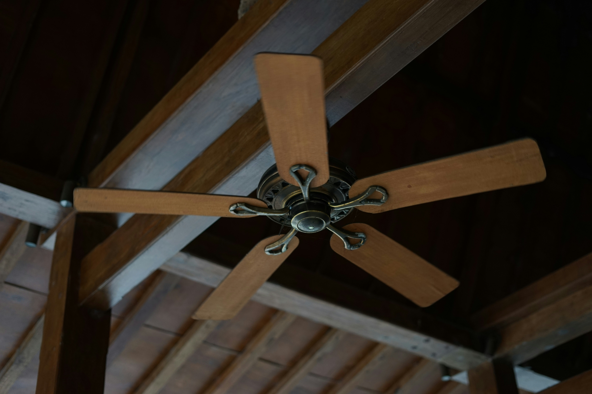
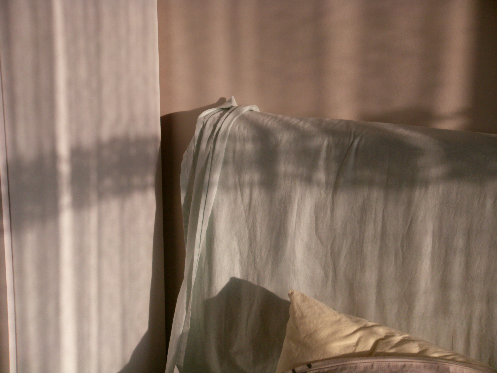
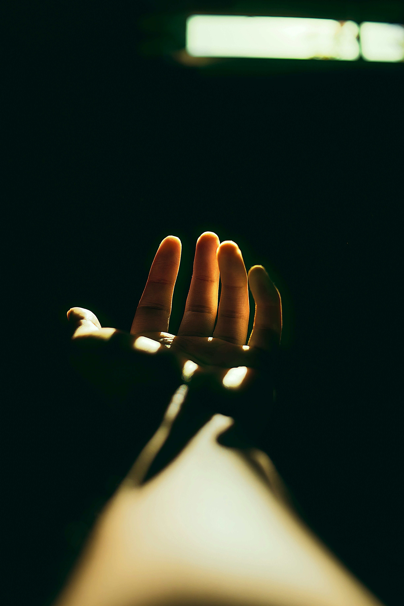

Photo by Ahmad Budi on Unsplash
For the majority of my life, I thought that being sensitive was a weakness that needed to be fixed. After a long day, I can still see myself sitting by myself in my room while the ceiling fan hums a gentle, rhythmic blur overhead. The air was heavy. I played back a quick conversation from earlier, a thoughtless comment someone made and then forgot. But it resonated with me. "You're too personal," they accused, their words looping until they blended into my own voice. Too sentimental. Become more resilient. Somehow, I discovered that silence was a sign of strength. Being emotional meant losing control, and maintaining that composure was armor. I therefore taught myself to swallow what lingered and laugh off what hurt. I learned to remain motionless when something hurt until my only form of relaxation was numbness. Up until it didn't, it worked. The parts of me that were buried fermented instead of disappearing.

Photo by Efe Kekikciler on Unsplash
Silently, almost by accident, the shift started. When I first started working with kids, I assumed it would be easy, just listening, guiding, and helping. But as time went on, I saw how they would come to me when they were feeling overburdened. On occasion, they would sit quietly next to me, their little shoulders shaking as they tried not to cry. On other occasions, they would express their entire range of emotions in fragmented sentences, including anger, frustration, and sadness.

Photo by Nathan Dumlao on Unsplash
One afternoon, I was approached by a kid who was crying over something that adults would not think much of. The room smelled faintly of sanitizer and crayons. Chairs were scraping and someone was laughing too loudly, but in that small sphere beside us, nothing moved. They clenched their fists, their face flushed, and the shame started to creep in. I dropped to my knees beside them. "It's okay to feel upset," I said instead of brushing it off. Until their chest relaxed and their grip on the present relaxed, we stayed there, breathing wildly together.

Photo by Nathan Dumlao on Unsplash
I kept playing back that brief conversation as I drove home. It struck me that the very trait I'd hidden, my softness, my instinct to feel too deeply, was exactly what made that moment possible. I picked up on details that others missed, like the hesitancy in someone's voice and the fact that silence can reveal more truth than words ever could. I wasn't weak because I was sensitive. It was a sort of awareness, a silent force that was steady and observant.
I still overthink things. I still replay conversations, wondering what I could have said. The distinction is that I no longer treat that inclination as a medical condition. Sensitivity is a skill that must be carried; it is not something that can be outgrown. I have learned the ability to speak it fluently. I still occasionally catch myself fighting the old toughening reflex. However, I then recall that true strength isn't about fighting against what moves you. It's allowing emotions to flow through you without allowing them to control you. It involves enduring discomfort long enough to grow from it rather than trying to hide it. Nothing about that is delicate.

Photo by Nathan Dumlao on Unsplash
I pursued a type of hardness for years, but it never fit. Now I realize that the strength I was looking for was always there, just waiting for me to stop feeling bad about it. I now see the world through my softness, which was once my shame. I am, at last, unarmored, but not unprotected, because of that recognition.

Photo by Agustin Fernandez on Unsplash